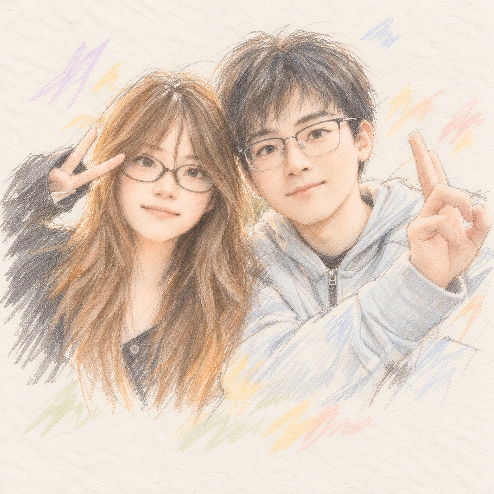

LITTLE QUESTIONS, CLOSER HEARTS
每天两道题，
多懂你一点。
把没来得及聊的话，留在这里。

TODAY'S LITTLE CONVERSATION
今天，想听你说
♡ ♡
正在连接云端
正在准备今天的问题…
想问问你
向对方提问
留言箱
写一条留言
A LITTLE MORE ABOUT YOU
慢慢认识你
题目从哪里来？
问题参考下列公开资料的主题与对话方法，重新编写为适合日常相处的中文问句，不是原版量表或关系测试。阶段时间是本提问箱的安排，并非研究规定的恋爱进度。
OUR LITTLE ARCHIVE